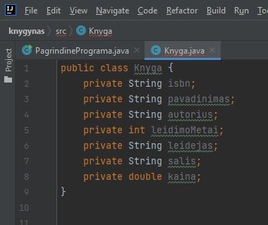

Užduotis:

- Susikurti projektą bei PagrindinePrograma.java failą (klasę). Norint sužinoti/prisiminti, kaip tai padaryti, spauskite čia
- PagrindinePrograma.java susikurkite main metodą (įraškite main ir pasirinkite, jog nereiktų rašyti viso ilgo teksto)
- Susikurkite Knyga.java failą (klasę)
- Joje turėtų būti tokie kintamieji:
- isbn - knygos identifikacinis kodas sudarytas iš dešimt skaičių, atskirtų trim brūkšneliais. Pvz.: (95-8238-577-4) (iš viso 13 simbolių)
- Pavadinimas
- Autorius
- Leidimo metai
- Leidėjas
- Šalis
- Kaina
- isbn darysime String, kadangi skaičiai IR brūkšniukai (simboliai). Pavadinimas String, kadangi tai yra tekstas, Autorius taip pat String, kadangi tai yra tekstas. Leidimo metai int (integer), kadangi metai visada būna sveikas skaičius. Leidėjas String, kadangi tai tekstas (pavadinimas), šalis taip pat String, kadangi tai tekstas. Kaina yra double, kadangi tai skaičius su kableliu.

- Toliau, po kintamųjų (bet prieš klasės uždaromąjį riestinį skliaustą, kadangi norime viską daryti klasės viduje) spaudžiame dešinį pelės klavišą ir pasirenkame "Generate..."
- Toliau, renkamės "Constructor", kadangi kursimės konstruktorius. Vieną pilną, vieną tuščią. Taip derėtų pasidaryti visada, tačiau, kai reikia galima susikurti ir dalinai pilnų konstruktorių (nebūtina)
- Kad sukurti tuščią konstruktorių spaudžiame "Select none"
- Kad sukurti pilną konstruktorių vėl spaudžiame dešinį pelės klavišą, "Generate...", "Constructor" ir tada pažymime visus kintamuosius su CTRL klaviatūros mygtuku ir kairiu pelės klavišu. (arba tiesiog CTRL + A paspausti su klaviatūra)
- Spaudžiame "Ok" ir dabar kodas turėtų atrodyti štai taip:
<p> yra pastraipos žymė